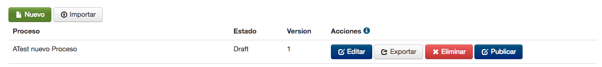
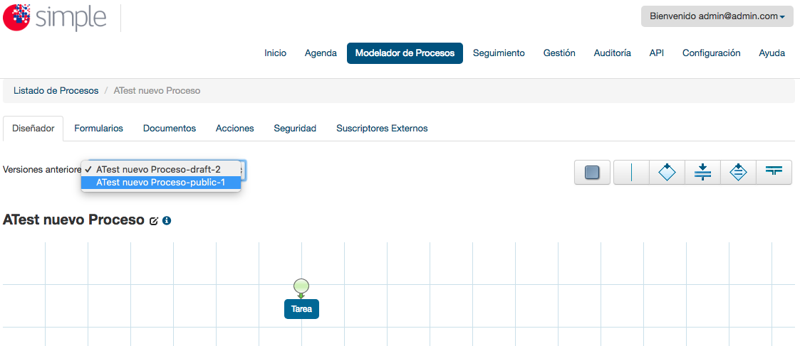

En la actualidad todos los procesos están quedando versionados. Al crear un nuevo proceso por omisión queda en estado "draft" y con la versión 1. Como se muestra en la siguiente figura.

Figura 1: "Nuevo Proceso versionado"
Para visualizar un proceso en estado "draft" en el Frontend se visualizará de la siguiente forma.
Para publicar un proceso versionado es necesario dar click en el boton que se encuentra al costado derecho del proceso de nombre "Publicar", con esto se publicará la actual versión en ambiente productivo (en el caso en que la entidad donde se está trabajando cuente con 2 ambientes (desarrollo y producción), de lo contrario la publicación se realizará solo en el ambiente actual y el estado del proceso pasará de "draft" a "Publicado". Como se muestra en la siguiente figura.
Para volver a una versión previa de un proceso solo es necesario editar el proceso en el que se desea realizar dicha acción y seleccionar en el listado de versiones, la versión específica a la que se desea volver.
Como se muestra en la siguiente figura:

Figura 4: "Volver a cargar una versión previa de un proceso"